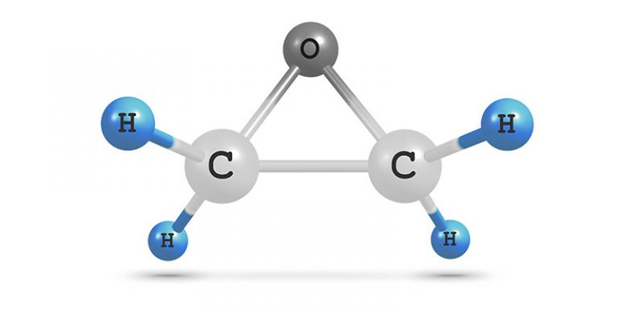
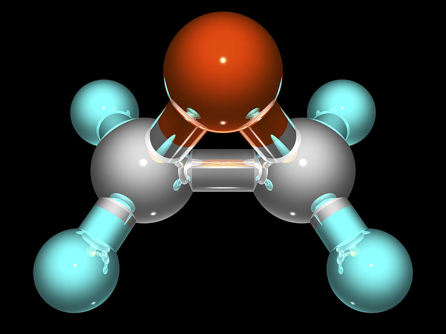

Structure
The epoxy cycle of ethylene oxide is an almost regular triangle with bond angles of about 60 degree and..
Read More

Chemical Properties
Molecular Formula, Molar Mass, Melting Point, Vapor Pressure, Volatility, Solubility, Air Density
Read More
Physical Properties
Molar mass : 44.05 g/mol, Form : Gas, Color : colorless , Vapor density : 1,5 (air = 1) Solubility : Insoluble in water..
Read More